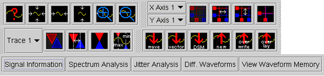

Toolbars
This menu item allows you to display the Graph Customization, Cursor, Marker, Hardware Access, and User Defined Function toolbars in the toolbar area of the main window.

This menu item allows you to display the Graph Customization, Cursor, Marker, Hardware Access, and User Defined Function toolbars in the toolbar area of the main window.
